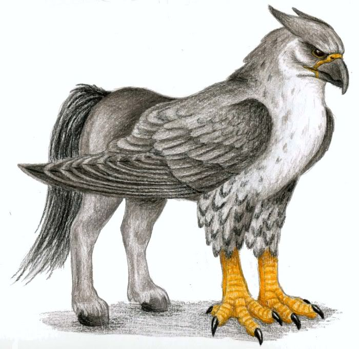
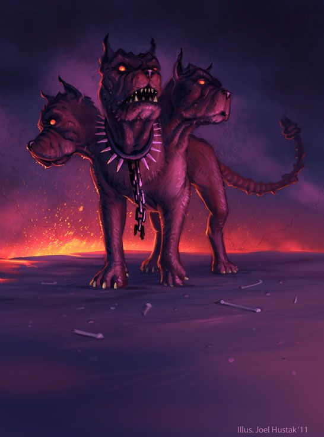
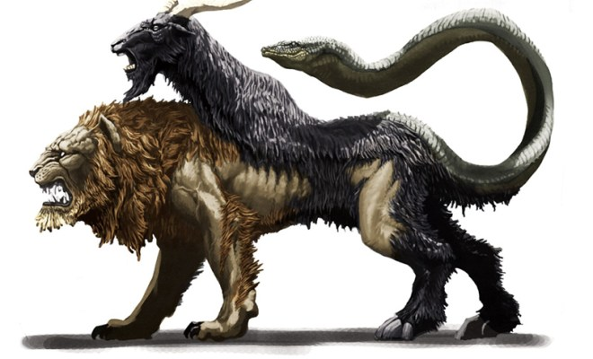

Après sa découverte, le mammifère marin à l'origine du commerce des « cornes de licorne » en occident, le narval, acquiert le surnom de « licorne de mer ». Le narval étant perçu comme la version aquatique de l'animal terrestre légendaire, ce surnom perdure.
En savoir plusArtikodin, le Pokémon glaciaire : Artikodin est un Pokémon de type Glace et de type Vol. Il se trouve dans les Îles Écume et est au niveau 50. Lorsque le joueur le rencontre, il possède les attaques suivantes : Brume, Hâte, Lire-Esprit et Laser Glace. Il est doté de la Capacité Spéciale Pression, qui retire un PP supplémentaire à l'ennemi lorsque le Pokémon subit son attaque
En savoir plus Aigle du Caucase : Dans la mythologie grecque, on désigne par le nom d’aigle du Caucase, dit « le chien ailé de Zeus » le rapace qui, sur l'ordre de Zeus, rongeait chaque jour le foie de Prométhée alors que celui-ci était enchaîné. Ce dernier subissait ce calvaire pour avoir donné le feu aux hommes. L'aigle du Caucase passait pour le fils de Typhon et d'Échidna. Il fut tué par Héraclès, qui délivra ensuite Prométhée1. Chez Hygin, il porte le nom d’Éthon (aethonem aquilam, « l'aigle Éthon »), cependant ce nom n'est cité chez aucun autre auteur.
En savoir plus Cerbère : Dans la mythologie grecque, Cerbère (en grec ancien Κέρϐερος / Kérberos) est le chien à trois têtes gardant l'entrée des Enfers empêchant les morts de s'échapper de l'antre d'Hadès et des vivants de venir récupérer certains morts.
En savoir plus Griffon : Le griffon ou grype est une créature légendaire présente dans plusieurs cultures anciennes. Il est imaginé et représenté avec le corps d'un aigle (tête, ailes et serres) greffé sur l'arrière d'un lion (abdomen, pattes et queue), et muni d'oreilles de cheval. Avec quelquefois des variantes le griffon gardera de tout temps la particularité reconnaissable d'être hiéracocéphale.
En savoir plus